Leadership Team – Group and SLT
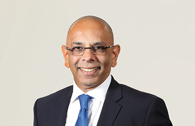
Mr Dileepa Wijesundera
Group Chief Executive Officer, Sri Lanka Telecom PLC
Mr Dileepa Wijesundera is an engineer with extensive experience in project logistics, profitability and restructuring both at private and Government institutions. He holds a BSc in Civil Engineering and an MSc in Management from the Loughborough University (UK). He has held leadership positions in several prestigious organisations including Head of Emirates Sky Cargo, Canada, Senior Vice-President – Qatar Airways, Chairman – Sri Lanka Ports Authority amongst others.
Mr Wijesundera assumed duties as the Group CEO of SLT on 9 March 2015.
Mr Mahinda B Herath
Group Chief Planning Officer
Mr Herath is a Chartered Engineer with an Honours Degree in Engineering from the University of Moratuwa and a Master’s Degree in Industrial Mathematics from the University of Sri Jayewardenepura. In his career at SLT spanning over 32 years, he has gained multi-disciplinary exposure in the fields of Engineering, Management, Regulation and Business. He has previously held a number of senior positions in SLT, including the Chief Planning Officer, General Manager International Business, General Manager, Regulatory Affairs and Deputy General Manager Colombo Metro. Mr Herath has gained extensive training offered by reputed international operators, including Telia AB of Sweden, France Telecom, AT&T of USA and KDD of Japan. He has also gained certifications in Telecommunication Regulation from the Commonwealth Telecommunications Organisation (CTO), Australian Communication and Media Authority (ACMA) and University of Florida. He has also been involved in the activities of ITU study groups, Sri Lanka Association for the Advancement of Science (SLAAS) and International Development Research Centre (IDRC), with several research papers and a book chapter to his credit. Mr Herath is currently heading the Planning Group which is being developed as a centre of excellence in strategy and planning for both network and information technology, spanning the entire SLT Group.
Mr Ajantha Seneviratne
Group Chief Marketing Officer
Mr Seneviratne joined SLT in 1993. He holds a BSc in Electronics and Telecommunications from the University of Moratuwa and a Postgraduate Diploma in Industrial Engineering from OUSL. In addition, he holds an MBA from the University of Sri Jayewardenepura. He is a Chartered Engineer and a member of The Institution of Engineers Sri Lanka as well. He counts over 10 years of experience in marketing. He is also the Chief Executive Officer of SLT VisionCom (Private) Limited.
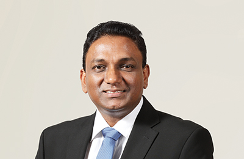
Mr K A Kiththi Perera
Group Chief Enterprise and Wholesale Officer
Mr Perera joined SLT in 1994. He holds an MEng from University of Moratuwa in Electronics and Telecommunications Engineering and is a Chartered Engineer of the Institute of Electrical Engineers and Engineering Council (UK). He has extensive experience in International Transmission Systems, Submarine Cable Systems, Data and IP Networking and Project Management.
He counts over 12 years of experience in the enterprise and Government customer segments. In addition, he was instrumental in introducing Metro Ethernet Technology to Sri Lanka. Mr Perera has provided voice-data integrated enterprise solutions connected with high speed resilient connectivity services to many customers.
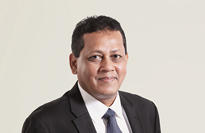
Mr Saman Perera
Group Chief Information Officer
Mr Saman Perera with over 23 years of experience in Telecommunication Industry has extensive experience in the full spectrum of Strategic IT Management, ranging from Systems & Technology Strategy, Software Development, Operations, Business Process Innovation, HRM to Risk & IT Investment. Prior to appoint as the Group CIO of SLT Group, he served as Senior General Manager Information Systems at Mobitel transforming its IT Group to a key strategic unit that shaped Mobitel’s business and its entire value chain by infusing a powerful professional IT team that fueled many innovations in digital services while bringing down TCO for many critical systems.
He holds an MBA in Management of Technology from University of Moratuwa, MSc in Computer Science from University of Colombo and BSc from University of Colombo. He serves as a resource person for MBA in Information Technology at University of Moratuwa, served as a visiting Lecturer for Postgraduate Diploma/MBA in Information Systems Management, Faculty of Graduate Studies at University of Colombo. He is currently serving as a member of the Faculty Board of the Faculty of Engineering, University of Moratuwa as an industry representative. He is an active member of Computer Society of Sri Lanka, has also served as a Council Member of the Computer Society of Sri Lanka.
He won the prestigious ‘CIO OF THE YEAR 2015’ Award – a once in lifetime accolade – from Computer Society of Sri Lanka.
Mr Chandrasiri Kalupahana
Group Chief Internal Auditor
Mr Kalupahana joined SLT in September 2016 as the Group Chief Internal Auditor. Immediately prior to joining SLT, he has worked as Chief Financial Officer at Regional Development Bank (RDB) which is a 100% Government-owned bank having 265 branches Island-wide. In addition to his duties as CFO of the bank, he has been instrumental in initiating the establishment of the Treasury Division for RDB, restructuring the Internal Audit Division and contributed heavily to proper implementation of core banking network and system to the Bank.
He has worked as Head of Audit at several companies. In addition, he has held senior positions at both local and overseas companies serving at a number of key positions including Head of Finance, Assistant General Manager, Senior Deputy General Manager and General Manager/CEO in the fields of Banking, Finance, Insurance, Manufacturing, Civil Engineering, Helicopter Charter and Auto Mobile etc. He has more than 34 years experience and obtained true international exposure having worked with foreign nationals at British, Irish and American Companies for several years in Tanzania, Angola/UK and Saudi Arabia. He had worked as the CEO for three regulated Companies; an American Company in Tanzania, British Company in Angola/UK and Insurance Company in Sri Lanka.
He is a Fellow member of The Institute of Chartered Accountants of Sri Lanka (CA Sri Lanka), a Fellow member of the Association of Accounting Technicians of Sri Lanka, a Fellow member of the Professional Managers of Sri Lanka and had membership at the Board of Certified Public Accountants & Auditors of Tanzania while he was employed there. Mr Kalupahana has obtained four years of training required to be admitted as a member of CA Sri Lanka, from KPMG – Sri Lanka and has received extensive local and overseas training in different fields.
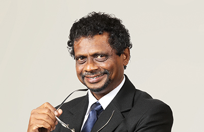
Mr Tilak De Silva
Chief Business Innovation and Development Officer
Mr De Silva joined SLT in 1984 and counts over 32 years of experience in IT and Communication. He is a pioneer in transforming SLT to an IT enabled company. He has gained multidisciplinary exposure in the fields of engineering, information technology and global telecom business. Mr De Silva has held key positions including Head of IT, Chief Global Officer, Chief Network Officer and Advisor to CEO on Technology Strategies at SLT. He has also held the position of CEO, SLT Hong Kong which was a subsidiary of SLT.
Mr De Silva holds a Bachelor of Science Degree in Engineering (Specialising in Electronics and Telecommunications Engineering) from the University of Moratuwa and a Master of Science Degree in Data Communication from Brunel University, UK. He is a Chartered Engineer and a Chartered IT Professional. He held the prestigious national figure of the president of The Institution of Engineers Sri Lanka (IESL) in year 2013.
Mr P Roshan Kaluarachchi
Chief Business Strategies Officer (Subsidiaries)
Mr Kaluarachchi joined SLT in 2010 as Chief Marketing Officer. He holds a Postgraduate Diploma in Marketing – CIM UK and a Master’s Degree in Business Studies from the University of Colombo. Fellow of the Chartered Institute of Marketing (FCIM), a Member of the Sri Lanka Institute of Marketing (MSLIM) and a Member of the Advisory Board of CMO Council, Asia Pacific Region.
In addition to his position as a Board Director of CIM Sri Lanka, he was appointed as a judge at the SLIM Brand Excellence Awards in 2013 and 2015. He counts over 22 years of experience in Marketing, Sales Management and Strategic Business Management in both multinational and blue chip companies in Sri Lanka. In addition, he has cross industry experience in FMCG, consumer durables, and telecommunications in both fixed and mobile categories in Sri Lanka. He was the Chief Marketing Officer (CMO) at SLT from November 2010 to March 2015. He is also the Chief Executive Officer of SLT Human Capital Solutions (Private) Limited.
Prior to joining SLT, he served as General Manager – Marketing at Mobitel where his strategic marketing leadership enabled Mobitel to become the second largest mobile operator within a short span of three years. Currently, he is reading for his PhD in Management and Business Studies at the University of Colombo.
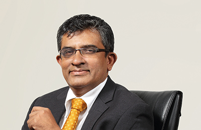
Mr Udeni K. Samararatne
Chief Financial Officer
Mr Samararatne is a Member of the Association of Chartered Certified Accountants, UK and the Chartered Institute of Management Accountants, UK. He has over 25 years of extensive experience in finance having worked in both local and international companies such as Richard Pieris PLC, Lanka Ashok Leyland PLC, Noritake Limited of Japan, Ferrero Limited and Ceat Kelani Holdings Limited. Prior to joining SLT, he was the Group General Manager – Finance of Ceat Kelani Holdings Limited group of companies. He also holds a MBA from the SBS Swiss Business School Zurich Switzerland.
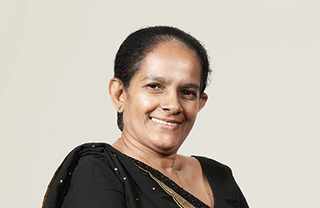
Ms Indrani Hissalle
Chief Human Resources Officer
Ms Hissalle, joined SLT in 1993 and holds a BSc in Electronic & Electrical Engineering and MSc in Telecommunications Engineering from University of Peradeniya. She is a Fellow of The Institution of Engineers Sri Lanka and a Past President of IESL Provincial Centre. In addition, she is a Member of Institute of Electrical & Electronic Engineering, IEEE (USA) and currently holds the position of Secretary of Microwave Theory & Techniques Society (Sri Lankan Chapter). Ms Hissalle is a life member of JASIECA – Japan, where she had intensive training on solving human and organisational problems.
She is a member of Association of HR Professionals (MHRP), SL and works towards the betterment of the corporate business and established efficiency, productivity and sound management during first year as CHRO of SLT.
She has extensive expertise in Regional Operations, Project Management, Training, Contact Centre business including HR management. She has been engaged with employee relationship activities by heading disciplinary committees, Governance Board and Company Dress Code Committee for last six years. She has been the President of SLT Netball Association from its inception. Ms Hissalle is a reputed speaker at IQPC International Quality & Productivity Centre and a visiting lecturer of University of Peradeniya. She is a reputed member of the International Rotary Club and is currently the District Attendance Committee Chairperson. She is reading for her PhD at the University of Peradeniya.
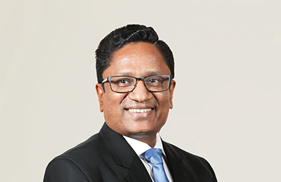
Mr D W R Wijeweera
Chief Information Officer
Mr Wijeweera, joined SLT in 1982. He was appointed as Head of the Billing Division in 2001 and thereafter CIO of SLT in 2005. He is a member of The Institution of Engineers Sri Lanka (IESL), IET (UK) and CSSL. He has been involved in mega IT projects providing the strategic IT road map for SLT. As the Programme Manager, Mr Wijeweera implemented the Integrated OSS and BSS which was later integrated with the CRM system.
At present Mr Wijeweera is the project sponsor for implementing the Master Data Management System (MDM), CRM implementation and Service Oriented Architecture implementation framework in the SLT IT landscape.
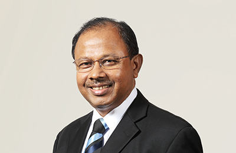
Mr Priyantha Perera
Chief Logistics Officer
Mr Perera joined SLT in 1982. He holds a Bachelor of Science in Engineering Degree in Electronics and Telecommunications from the University of Moratuwa. He is a Chartered Engineer with a Postgraduate Diploma in Marketing from the CIM (UK). In addition, he is a Fellow and a Past Council Member of The Institution of Engineers Sri Lanka, a member of IET (UK) and CIM (UK) and a Competent Toastmaster as well.
He has extensive experience in numerous areas of operations including, regional management, project management, marketing management, administration, logistics and supply chain management to name a few. He is presently serving as the Head of the Academic Board for the BTEC Level 5 HND Diploma Programme at the Sri Lanka Telecom Training Centre.
He has been instrumental in introducing policies for the first time in the areas coming under his purview. He has successfully led cross-functional teams on special assignments such as productivity improvement, 5S and breakthrough thinking. One of his major contributions to the Company is heading the successful implementation of Company-wide ERP system. He has also given leadership in establishing the first ever Telecommunication Museum in Sri Lanka.
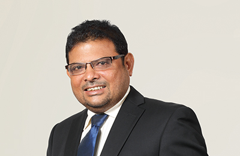
Mr M B P Fernandez
Chief Network Officer
Mr Fernandez joined SLT in 1991; following his roles in various multi-national telecommunications organisations.
He holds a BSc (Eng) in Electronics and Telecommunications from the University of Moratuwa, Sri Lanka; and an MBA from the University of Sri Jayewardenepura, Sri Lanka. He is a Chartered Engineer and Fellow of The Institution of Engineers Sri Lanka.
His 30 years carrier as a professional in telecommunication industry records over 600 days attendance for overseas trainings, seminars and various forums organised by world recognised training institutions including international telecommunication operators and reputed telecommunication equipment vendors.
He has held a string of senior positions within SLT, culminating in his current position as a Chief Officer Regional and Network Operations. In this role he oversees all the network-related operations, maintenance and projects of SLT in Sri Lanka. In addition, he has overseen the design, implementation and operation of SLT's Call Centre in line with improving customer experience. He was pioneered in Telecommunications Network Planning and Implementation of network with migrations and integrations across various technology platforms. He has played a leading role for planning and deploying very large scale programmes for SLT Network transformation. New Generation Network (NGN), Sri Lanka Back Bone Network (SLBN), Fiber To The Home (FTTH), LTE (4G), National Broadband programme (i-Sri Lanka), National Data Centre and Submarine Cable Systems are some of the flagship projects in those programmes.
He is also a member of the International Management Committee for the submarine cable consortium of SEA-ME-WE 3, 4 and 5, Dhiraagu Cable and the Bharath Lanka Submarine Cable System. He additionally serves as a management committee member under the South-East Asia and Indian Ocean Cable Maintenance Agreement (SEAIOCMA).
Mr Fernandez is a permanent member of the Technical Subcommittee of SLT since 2011. He also functions as a Non-Executive Director of SLT Services Limited since 2007.
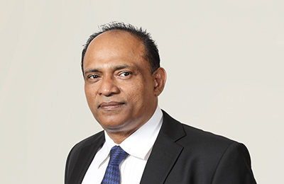
Mr Chinthaka C Wijesuriya
Chief Regional Officer
Mr Wijesuriya joined SLT in 1984 and served as Regional Head in 2001 prior to his appointment as Chief Regional Officer of SLT in 2010. He obtained Graduate membership of Radio and Electronic Engineers (London, UK) and became a Chartered Engineer of the Institution of Electrical Engineers (London, UK). He is a Member of the Association of Professional Engineers Scientists and Managers Associations in Australia and holds an MBA (Technical Management) from La Trobe University of Australia. He has a wide experience in the telecommunications industry, in areas such as Operations, Maintenance, Sales, Marketing, Customer Service, Quality Management and Project Management.
He also functions as a Non-Executive Director of SLT Services Limited since 2016. He has made immerse contribution to the New Generation Network (NGN), Sri Lanka Backbone Network (SLBN), Fiber To The Home (FTTH), 4G LTE, National Broadband Programme (i-Sri Lanka) project of SLT.
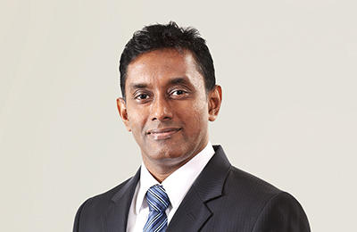
Mr Imantha Wijekoon
Chief Sales Officer
Mr Wijekoon is a Chartered Engineer with a Degree in Electronics and Telecommunication Engineering from the University of Moratuwa. In addition, he holds an MBA from the Postgraduate Institute of Management of University of Sri Jayewardenepura. In his career at SLT spanning over 22 years, he has gained extensive exposure in the fields of Regional Operations, Project Management and Consumer and SME sales Operations. He has previously held a number of senior positions which includes Head of Province, Deputy Head of Regions, General Manager Customer Service Centres and General Manager Metro Region. Mr Wijekoon counts over 10 years of experience in consumer sales segment.
Leadership Team – Subsidiaries
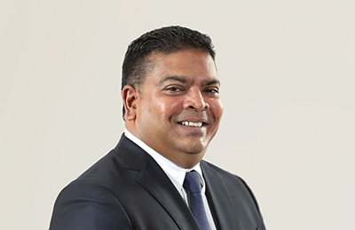
Mr Nalin Perera
Chief Executive Officer, Mobitel (Private) Limited
A pioneer in Sri Lanka’s Mobile Telecommunications space, Nalin has steered the industry’s landscape and evolution and clearly stands out as an industry front liner. In an illustrious career spanning three decades of working with several leading international and local businesses, his experience in the Mobile Telecommunication industry is synonymous with its history in Sri Lanka, since it was introduced in 1989, which renders him perhaps the most senior and experienced Mobile Telecommunication industry specialist in the country.
He was instrumental in the introduction of mobile telephony to Sri Lanka by the pioneer operator Celltel in 1989. His own success within the Millicom Group was stellar. Having joined as Market Development Executive at Celltel, he rose to General Manager, Sales and Marketing, within a short period of time.
Nalin led the introduction of the Pre-Paid concept to Sri Lanka and its entire supportive eco system such as the Pre-Paid mechanism, organisation structure, sales and distribution channels, communications, customer support etc. Subsequent to the launch of the Pre-Paid service, Nalin also pioneered several revolutionary products and services such as Value Added Services and Enterprise Business Solutions.
Presently, Nalin functions as the Chief Executive Officer of Mobitel and has led the Company to become one of the most profitable and successful Mobile Service Operators in the country. He started his career at Mobitel as General Manager Marketing and progressed to the positions of Senior General Manager Marketing and Senior General Manager Contact Centre Operations respectively. He also held the position of Chief Marketing Officer and took over the responsibilities of Chief Operating Officer at Mobitel in 2015. He leads with strong insights into product and channel development, human resource management and more importantly with his understanding of the telecommunication industry as a whole, apart from his expertise in mobile telephony. His contribution to Mobitel has earned the Company many accolades, including several local and international awards.
Nalin holds a Postgraduate Diploma in Marketing (UK) and is a Chartered Marketer (UK). He has obtained his Master of Business Studies at Colombo University.
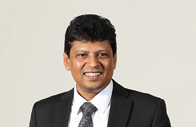
Mr Ajantha Seneviratne
Chief Executive Officer, SLT VisionCom (Private) Limited
Mr Seneviratne joined SLT in 1993. He holds a BSc in Electronics and Telecommunications from the University of Moratuwa and a Postgraduate Diploma in Industrial Engineering from OUSL. In addition, he holds an MBA from the University of Sri Jayewardenepura. He is a Chartered Engineer and a member of The Institution of Engineers Sri Lanka as well. He counts over 10 years of experience in marketing. He is also the Chief Executive Officer of SLT VisionCom (Private) Limited.
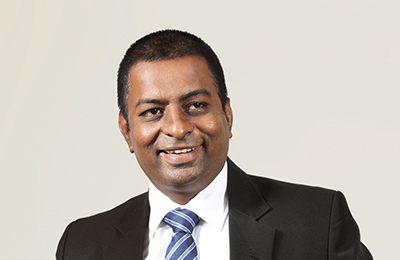
Mr Prabath Gunathunge
Chief Executive Officer, SLT Property Management (Private) Limited, Sri Lanka Telecom (Services) Limited
Mr Prabath Gunathunge is a Civil Engineer graduated from University of Moratuwa in 1993. He has been holding senior positions both in the public and the private sector for over 20 years. Prior to his present assignment, with Sri Lanka Telecom, he was the General Manager of Walkers Pilling PLC. Further to that, he has obtained an MBA from the Postgraduate Institute of Management in 2000.
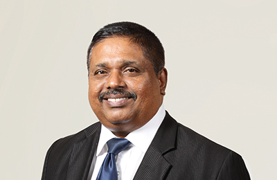
Mr Malraj Balapitiya
Chief Executive Officer, SLT Publications (Private) Limited
Mr Malraj Balapitiya is a professionally qualified Chartered Engineer and a Fellow member of the The Institution of Engineers Sri Lanka. He counts over 30 years of work experience at various strata of the SLT Administration and has swiftly climbed the corporate ladder from Technical Officer to Regional Telecom Engineer, Head of the Province and General Manager prior to his appointment as CEO of SLT Publications (Private) Limited. He is a dynamic personality with managerial, marketing and entrepreneurial skills and has helped Rainbow Pages to reach the highest echelons to become the only directory publisher recognised by the Government of Sri Lanka. In 2011, he was appointed as the CEO of SLT VisionCom (Private) Limited, in addition to his present position of CEO of SLT Publications (Private) Limited. He has used his innate marketing skills and charisma to get the support of SLT network to push PEO TV to greater levels of productivity and make it a viable and dynamic entity that has made a significant impact on the Pay TV industry of Sri Lanka. Today both Rainbow Pages and PEO TV are thriving businesses that earn much needed revenue for the SLT Group.
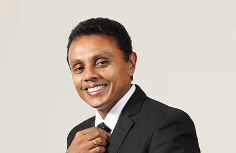
Mr P Roshan Kaluarachchi
Chief Executive Officer, SLT Human Capital Solutions (Private) Limited
Mr Kaluarachchi joined SLT in 2010 as Chief Marketing Officer. He holds a Postgraduate Diploma in Marketing – CIM UK and a Master’s Degree in Business Studies from the University of Colombo. Fellow of the Chartered Institute of Marketing (FCIM), a Member of the Sri Lanka Institute of Marketing (MSLIM) and a Member of the Advisory Board of CMO Council, Asia Pacific Region.
In addition to his position as a Board Director of CIM Sri Lanka, he was appointed as a judge at the SLIM Brand Excellence Awards in 2013 and 2015. He counts over 22 years of experience in Marketing, Sales Management and Strategic Business Management in both multinational and blue chip companies in Sri Lanka. In addition, he has cross industry experience in FMCG, consumer durables, and telecommunications in both fixed and mobile categories in Sri Lanka. He was the Chief Marketing Officer (CMO) at SLT from November 2010 to March 2015. He is also the Chief Executive Officer of SLT Human Capital Solutions (Private) Limited.
Prior to joining SLT, he served as General Manager – Marketing at Mobitel where his strategic marketing leadership enabled Mobitel to become the second largest mobile operator within a short span of three years. Currently, he is reading for his PhD in Management and Business Studies at the University of Colombo.
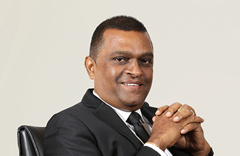
Mr Ranjith Ganganath Rubasinghe
Chief Executive Officer, SLT Campus (Private) Limited
Mr Ranjith G Rubasinghe holds a wealth of experience in the fields of Communication and IT in various national and multinational organisations and has been with Sri Lanka Telecom for over 15 years. He is a Chartered Engineer and a Fellow of the Institution of Engineers Sri Lanka (IESL). He has served as the Vice-President of the Institution of Engineers Sri Lanka (IESL). Mr Rubasinghe has also served as a Council Member of the University of Colombo and the Council of the Board of Management at University of Colombo School of Computing.
With an MBA from the University of Colombo, a Postgraduate Diploma in Electronics and Telecommunications Engineering and a BSc Engineering in Electrical and Electronics, Mr Rubasinghe is a certified member of the Sri Lanka Institute of Marketing (SLIM) and an associate member of the Institute of Personnel Management (IPM).
He adds to his diverse portfolio by displaying expertise in ICT Management, Human Resource Management, Marketing and Operational and Financial Control.
He is the Founder President/CEO of SLT Campus (Private) Limited (SLTC) which was embarked to fulfil the national need of expanding the provision of higher education in Sri Lanka. SLTC offers programmes developed in accordance with the Washington accord, leading to four-year Engineering degrees.
In 2014, he was appointed as the Chief Executive Officer of Mobitel (Private) Limited.
Mr Rubasinghe is also the founder CEO of SLT Manpower Solutions (Private) Limited where he served from 2008 – 2015 October. Not limiting to the service provided to SLT Group only, he was able to transform the organisation to SLT Human Capital Solutions (Private) Limited in 2013 with the mission to be the Leading Human Asset Management Partner in Sri Lanka.
At SLT, he served as head of section ‘Rainbow Pages’ (2006-2008) too and he was among the key members that headed the transformation of SLT’s Directory Services under the new brand ‘SLT Rainbow Pages’ to make it competitive with global brands in the same category.
Among his personal achievements, he was awarded the Chartered Engineer of the Year 2011 at IESL’s Engineering Excellence Awards and the ‘HR Leadership Award’ at the
Global HR Excellence Awards 2010 and 2013.
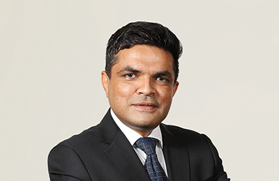
Mr Mahinda B Herath
Chief Executive Officer, Sky Network (Private) Limited
Mr Herath is a Chartered Engineer with an Honours Degree in Engineering from the University of Moratuwa and a Master’s Degree in Industrial Mathematics from the University of Sri Jayewardenepura. In his career at SLT spanning over 32 years, he has gained multi-disciplinary exposure in the fields of Engineering, Management, Regulation and Business. He has previously held a number of senior positions in SLT, including the Chief Planning Officer, General Manager International Business, General Manager, Regulatory Affairs and Deputy General Manager Colombo Metro. Mr Herath has gained extensive training offered by reputed international operators, including Telia AB of Sweden, France Telecom, AT&T of USA and KDD of Japan. He has also gained certifications in Telecommunication Regulation from the Commonwealth Telecommunications Organisation (CTO), Australian Communication and Media Authority (ACMA) and University of Florida. He has also been involved in the activities of ITU study groups, Sri Lanka Association for the Advancement of Science (SLAAS) and International Development Research Centre (IDRC), with several research papers and a book chapter to his credit. Mr Herath is currently heading the Planning Group which is being developed as a centre of excellence in strategy and planning for both network and information technology, spanning the entire SLT Group.